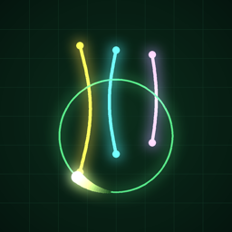

STRING SCOPE
An oscilloscope synth where every sound is a string.
WHAT IT IS
Stretch glowing strings across a phosphor screen, then draw beams. Each beam's tracer loops forever and plucks every string it crosses — length sets the pitch, thickness the octave, color the sound. Generate a full composition with one tap, then reshape it.
QUICK GUIDE
- BEAM — drag to draw a loop. Tap BEAM again to pick a shape: line, circle, triangle, square, star, wave or spiral.
- STRING — drag to stretch a new string. Tap STRING again to choose its sound and thickness.
- SELECT — tap strings to pick several, drag empty space to box-select, drag to move them, change their sound together.
- Pegs — drag a string's end rings to retune it. Longer is lower.
- KEY and the piano button transpose everything; the scale and ♩ buttons set scale and tempo (with tap tempo).
- Pinch to zoom and two fingers to pan the large canvas. Compositions save automatically.
SUPPORT
Questions, bugs or ideas? Email alvo.ipad.home@icloud.com. Please include your iPhone model and iOS version.